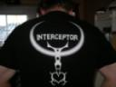

Inter/view (Pun intended)
Ruskie decided to make yet another interview and this time his victim was the aim-o-holic interceptor from Sweden, who also recently placed 2nd in the QHLAN 1v1 competition. Read more to find out who is the man behind the black t-shirt which is shown below.
Hey inter, tell us a little bit about yourself.
Hey. Well… My name is Daniel Schönning, and I live in a small town called Ockelbo. Mostly known for snowmobiles and that the boyfriend to the heir-to-the-throne of Sweden comes from here originally.

How long have you been playing quakeworld?
I started playing x-mas 97, and been playing on and off since I guess. I asked for money in x-mas presents, to buy myself a 33.6 modem. Bought one as soon as the stores opened again, jumped on to some old RQ server and started getting raped.
What do you work/study with?
I work on a small, newly started company that produces advertising products in cardboard and other such materials. It really sux, though. ;)
You were attending qhlan10, what did you think of the venue?
I liked it. It was alot of space, so you didn’t need to sit tight or elbow yourself through a lot of seats to get to the bathroom. :) I don’t think that it was any problem that it was two rooms, it’s not like you needed to walk 1km to get to get there. :P
What client mousepad/mouse/computer do you have?
I’ve been using ezquake for a long time now, and I really like it. It get better and better each update. They really listen to the players out there, and add requested feats. really fast. I really like the crew, they’re really helpful with answering questions that stuff. Thanks JohnNy_cz. ;)
I use a Razer Diamondback mouse, with X-Raypad ZeroFriction mouse skatez right now. I’ve never used any special skatez before now, but my skatez was so worn out at QHLAN so I really needed to change them. As mousepad I use X-Raypad T9. Been using a Func sUrface 1030 til about two weeks before the LAN, but that one also got worn out… Perfect timing. 8)
My computer… lol. It’s a 1.8ghz AMD with a GeForce4 lite version. :)
Do you play any other game than quakeworld regulary?
I play quite a lot of PS2. But no online games, no.
Fakeshaft was introduced lately in ruleset -smackdown, what is your opinion?
It doesn’t improve my shafting %, so I don’t like it at all. Seriously though; I don’t think that fakeshaft will improve anyones aim that much. It might make it easier for people playing on an unstable connection to get a better lg, as it will remove the ‘jumpy’ feeling of an jumpy ping.
I see that you have the signed the ownage tourney that it supposed to replace duelmania. And other good players have also signed, do you see it as a good replacement?
I don’t really see any difference, except for the name. So I guess that makes it kind of the perfect replacement tournament. :P
Do you see yourself as a dueller, and if so what is your strengths and weaknesses?
Yea, I for sure see myself as a duel player. My strengths I would say is my aim (big surprise), my skill in avoiding taking too much damage, and I hope I make some nice moves once and perhaps twice. Weakness is that I’m really bad at attacking.
How does the future of quakeworld look to you, in lets say five years?
I really have to say that I don’t see much hope for QW in five years. But I can always hope. What we need is some fresh players that don’t get scared away by the high skill that almost all QW player have now.
What is the best allround player in your opinion?
I have to say reppie right now. Great 4on4, 2on2 and 1on1 skills. Dag is always a fav. though. I Hope he will come back and rpe soon enough. ;>
If you could choose one player to do a comeback, who would it be and why?
I guess I have to say dag then. He would bring alot too both 1on1 and 4on4.
It seems that the quakeworld client ezquake is being developed pretty actively, if you got to choose some new features. what would that be?
A better server browser ala ASE.
I guess everybody wants to know, what is the secret about your shafting?
If there is a secret, I myself would like to know. If there ain’t; Play 500 povdmm4’s against UL. If you manage to get 35% LG against UL you will get 40+% against everyone else. Thats what I did… ;)
If you want to tell something or give a shoutout do it now!
Shoutouts to everyone at QHLAN for making it a pleasant experience.
Shoutouts to the whole QuakeWorld community for not letting the best fps ever die.
The list of other players I would like to mention here would be too long for me to remember, I would forget half of them. So I’ll just do the standard thing and say: You know who you are. ;>
Thanks for the interview and thanks for your time!
NP!
inter=D du eger typ=D